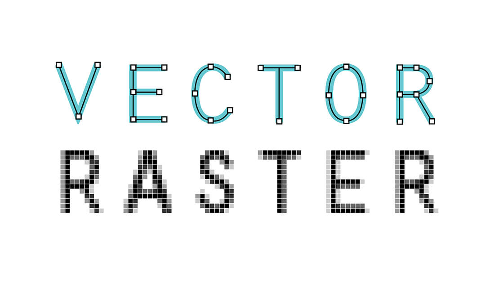
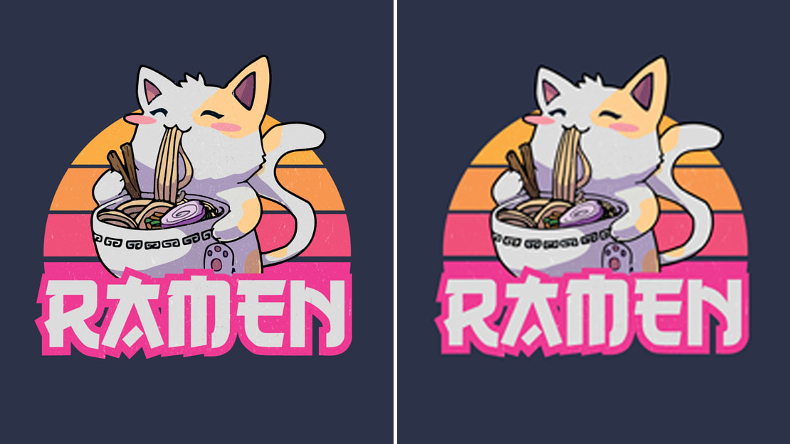
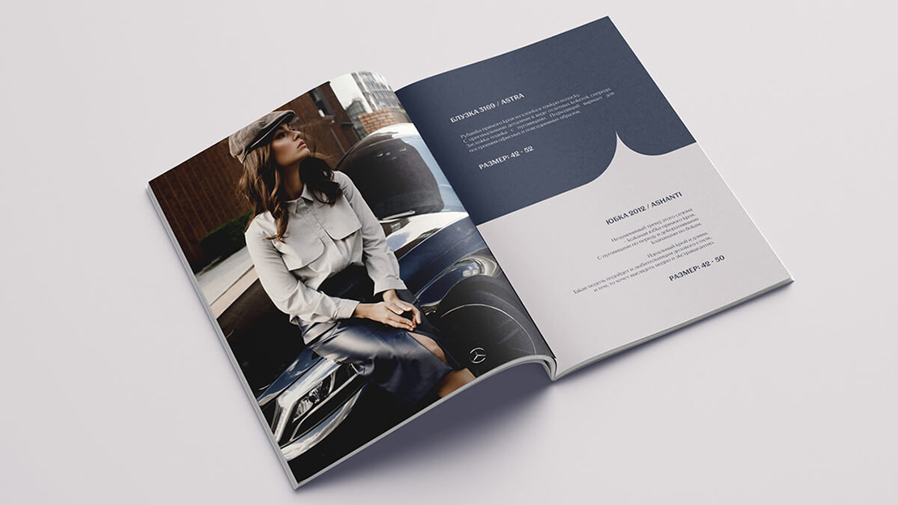

Готовите файлы к печати? Не ошибитесь с форматом. Иначе типография может вернуть вам файлы, чтобы вы изменили формат. Со всеми вытекающими последствиями в виде срыва сроков и сожженных в котле аврала нервов. И это в лучшем случае. В худшем случае макет могут отправить на печать «как есть», а это — непредсказуемый результат на выходе и потенциально полностью ушедший в брак тираж.
Чтобы этого не произошло, в статье расскажем, какой формат нужен для печати в типографии. А также затронем другие тонкости, которые необходимо учесть при подготовке макета, чтобы на бумаге все было таким же, как на экране компьютера.
Кратко об основах: в чем разница между растровым и векторным изображением
Цифровые изображения делятся на две большие группы: растровые и векторные.
Все фотореалистичные изображения — растровые. Это фотографии, картины digital-художников и даже скриншоты экрана. Из-за огромного количества цветовых переходов, полутонов, оттенков сохранить фотореалистичные изображения в памяти компьютера можно только одним способом: разбить их на миллионы отдельных точек (пикселей) и записать в таблицу, в которой каждой точке будет соответствовать конкретный цвет и координаты. Отсюда — гигантские размеры растровых файлов высокого разрешения, для которых несколько сотен мегабайт — не предел.
Если вы когда-нибудь видели схему для вышивания крестиком, то вы знаете, как выглядит растровое изображение. Просто пиксели в сотни раз меньше стежков, поэтому несмотря их квадратную форму, картинка на экране получается гладкой. Но стоит ее увеличить, и вы увидите такие же «ступеньки» на границах цветов.
Принцип хранения векторных изображений в памяти компьютера в корне отличается. Нет никаких отдельных пикселей — только простые фигуры и их формулы. Например, для сохранения нарисованной окружности в память записываются координаты ее центра, радиус, толщина, цвет и тип линии. И, конечно, что это окружность. Все остальное компьютер рассчитает и отрисует сам. Поэтому векторный формат в типографии часто называют изображениями «в кривых».
Учитывая, что векторные изображения сплошь состоят из формул, их можно увеличивать до бесконечности без потери качества. К тому же файлы получаются небольшого размера. Но такой формат допустим только для тех изображений, которые можно описать с помощью простых фигур. Как правило, это логотипы, персонажи, графика в мультяшном стиле, текст.
Чтобы подбить итоги, наглядно разница между векторным и растровым форматом показана на иллюстрации:

В каком формате сохранять для типографии растровые файлы
Чтобы обеспечить высокое качество печати растровых изображений, в типографию нужно отдать файл:
- В несжатом виде. Идеальный формат изображения для типографии — TIFF, но допустим родной для Adobe Photoshop формат PSD. Второй вариант особенно актуален, если печать широкоформатная — файл PSD с неслитыми слоями облегчает предпечатную подготовку.
- С разрешением 300 dpi для небольших форматов, вроде буклетов, листовок, меню, и 72 dpi для крупных форматов — от А2. Это афиши, плакаты, постеры, баннеры и другая широкоформатная полиграфия.
- Размером до 300–500 Мб. Ограничение на максимальный размер файла может быть и больше, но оно есть у каждой типографии.
Сжатые форматы картинок для печати в типографии — не лучший выбор. Хотя артефакты, которые могут появиться при таком сжатии, не всегда совсем уж сильно ухудшают качество отпечатанного изображения, они все равно могут бросаться в глаза и портить впечатление.

Тем не менее все типографии принимают JPG в качестве печатного формата, большинство работает с PNG. Но при этом сжатие должно быть минимальным. А вот файлы в формах Word и Excel, а также, скорее всего, в GIF, типография отправит обратно.
А векторные?
Хотя векторный формат проще масштабировать под любые носители, у типографий с такими файлами тоже возникает немало вопросов. Самый простой, почти гарантированный способ избежать проблем — отправить на печать макет, сохраненный в формате PDF. Даже если речь идет о книге, журнале и другой многополосной полиграфии с большим количеством страниц.

Также можно отдавать файлы в форматах AI, EPS, PS, CDR. Последний формат — родной для программы CorelDraw, которую массово используют при печати полиграфии. Поэтому иногда типография даже просит отправлять файлы именно в формате CDR, особенно если печать будет на нестандартном носителе.
Но при использовании любых векторных форматов, кроме PDF, могут возникнуть проблемы с несовместимостью версий. Вплоть до развалившегося макета, если он создан в новейшей версии программы, а его открыли в старой.
Какой формат нужен для типографии, если файл комбинированный?
Очень часто изображение, которое нужно распечатать, не чисто векторное или растровое, а комбинированное. Например, текст на листовке в кривых, а красочный фон — в растре. В этом случае сохраняйте все в PDF. В любом другом формате на печати изображение может «поехать».
Выводы
В каком формате готовить файл для полиграфии:
- Растровый — в TIFF, PSD, если нет выбора — в JPG.
- Векторный — идеально PDF, допустимо AI, EPS, PS, CDR.
- Комбинированные — PDF.